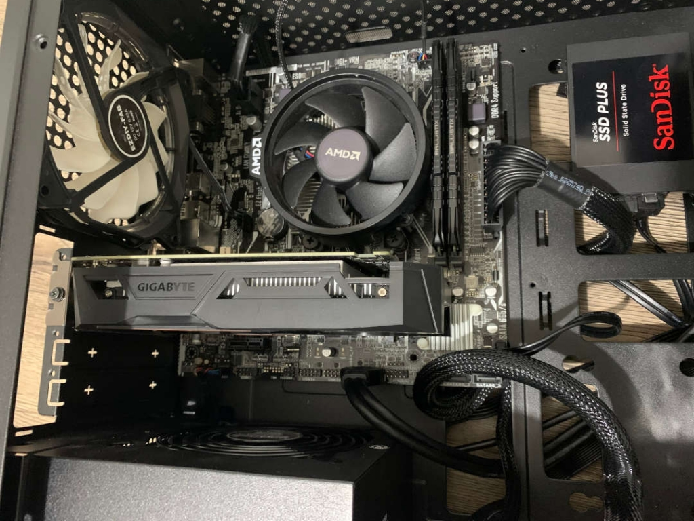

PCTO: La mia esperienza
Introduzione all’esperienza PCTO
Ho svolto il mio periodo di PCTO nell'azienda Techno Data System di Corinaldo, questa compagnia è molto giovane di fatti è stata messa su negli ultimi anni da due soci, Luca e Matteo, è divisa in due parti, una si occupa di servizio di riparazione computer, e aiuto da remoto o problemi software, in quel piano è disponibile anche la vendita di piccoli oggetti per l'hardware, mentre al piano di sopra si trova la parte dedicata allo sviluppo software che in quel momento stava creando un'applicazione al servizio di stabilimenti balneari per ordinazioni al bar. Sempre al piano di sopra viene gestito da altre due ragazze il servizio di abbonamento antivirus che offre l'azienda.

Primo periodo
Durante il primo periodo del mio PCTO, dal 17 maggio all’8 giugno, ho svolto attività prevalentemente manuali che mi hanno permesso di avere un contatto diretto con l’hardware dei computer dei clienti. In particolare, ho partecipato al processo di ripristino dei componenti danneggiati, un compito che, seppur semplice, mi ha permesso di acquisire una maggiore familiarità con la struttura interna di un computer e con le tecniche base di manutenzione.
Secondo periodo
Nel secondo periodo, dal 9 al 21 settembre, le mansioni assegnatemi si sono concentrate maggiormente sulla gestione dei servizi interni dell’azienda, con particolare attenzione agli strumenti di comunicazione e assistenza ai clienti. Una delle attività più significative è stata la cura del servizio di antivirus per i clienti che avevano sottoscritto l’abbonamento.
Componenti dell’azienda
L’azienda è stata fondata da due soci: Luca, che si occupa dell’assistenza tecnica, delle riparazioni e del rapporto diretto con i clienti, e Matteo, responsabile dello sviluppo software e dei progetti digitali.
Al piano superiore lavorano anche due ragazze, che gestiscono il servizio di abbonamenti antivirus offerto ai clienti.
Il team è giovane, dinamico e ben organizzato: ogni membro svolge un ruolo preciso, contribuendo al successo dell’azienda con professionalità e competenze specifiche.
Al piano superiore lavorano anche due ragazze, che gestiscono il servizio di abbonamenti antivirus offerto ai clienti.
Il team è giovane, dinamico e ben organizzato: ogni membro svolge un ruolo preciso, contribuendo al successo dell’azienda con professionalità e competenze specifiche.